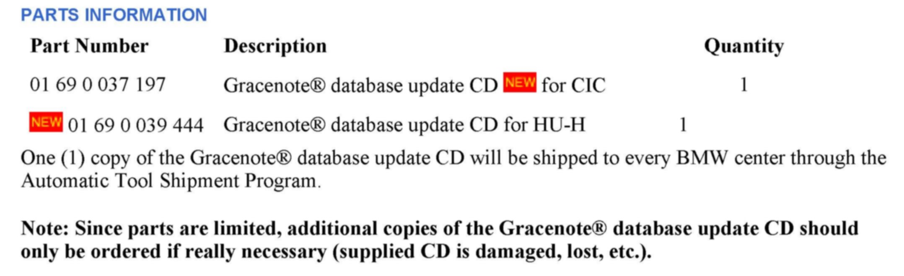
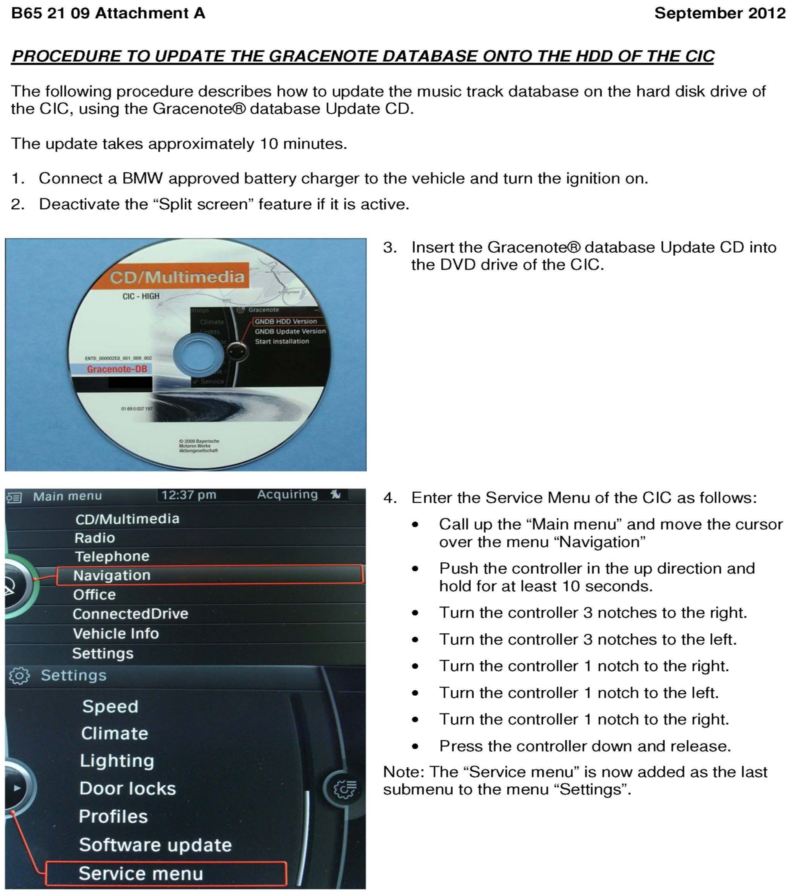
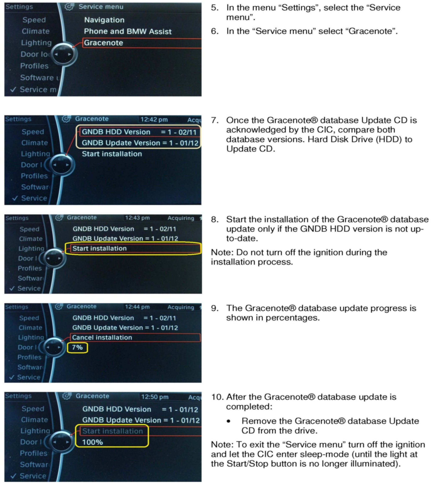
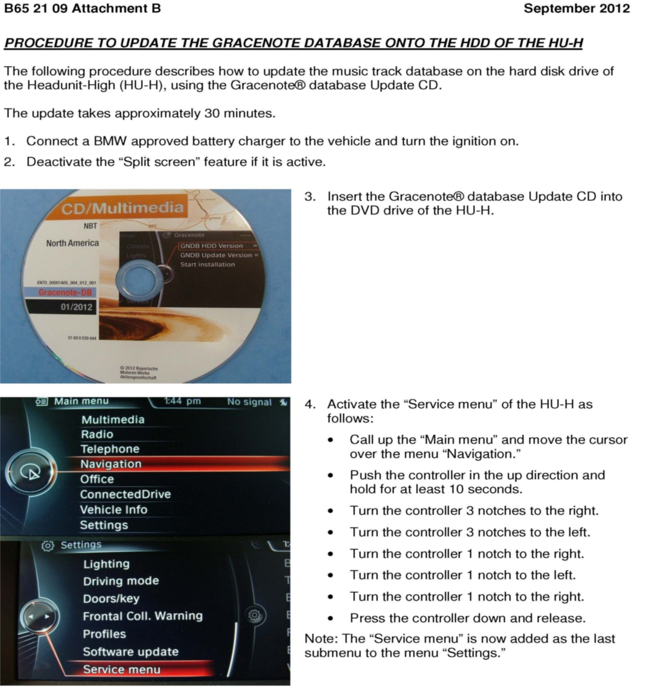
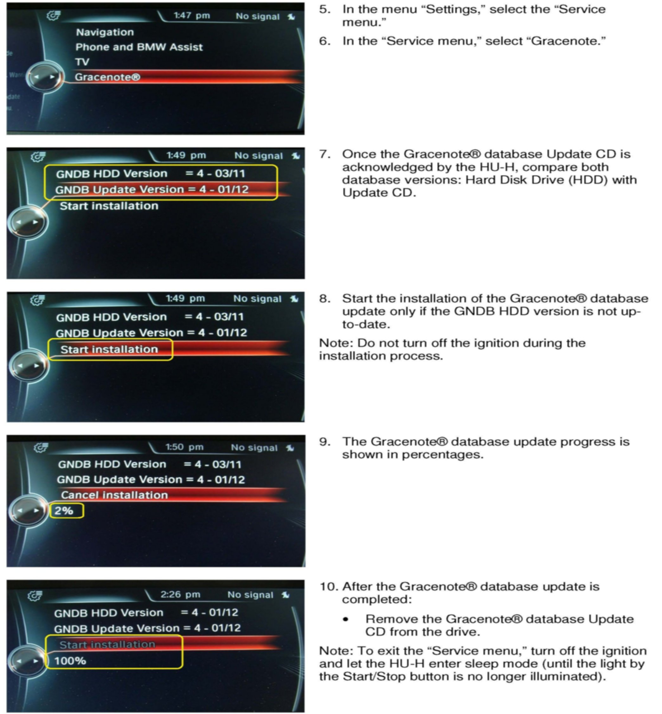

Audio System - CD Artist/Song Titles Not Displayed
SI B65 21 09Audio, Navigation, Monitors, Alarms, SRS
September 2012
Technical Service
This Service Information bulletin supersedes SI B65 21 09 dated May 2012.
[NEW] designates changes to this revision
SUBJECT
Artist and Song Title Are Not Displayed - Gracenote Data Not Up-To-Date
MODEL
[NEW] All with option 609 (Navigation System Professional, CIC or HU-H)
SITUATION
When playing certain audio compact discs (CDs), the artist and song title information is not displayed.
CAUSE
[NEW] The Gracenote(R) music track database installed on the hard disk drive of the Car Information Computer (CIC) or Headunit-High (HU-H) is not up-to-date.
INFORMATION
[NEW] The CIC and HU-H are equipped with special software provided by Gracenote(R) for the purpose of displaying music track data (artist and song title) when playing audio CDs.
[NEW] The Gracenote(R) data installed in the CIC and HU-H when the vehicle is produced is the latest available version at that time, and like Navigation map data, becomes outdated over a period of time.
BMW is not responsible for keeping the vehicle Gracenote(R) database up to date.
However, BMW is making available updated Gracenote(R) data for those dealers and customers wanting the latest data installed in their vehicles.
What is Gracenote(R) in general?
Gracenote(R) is a company that maintains and licenses a database containing information about the contents of audio CDs. It provides software and metadata to businesses that enable its customers to manage and search digital media. Gracenote provides its media management technology and global media database of digital entertainment information to the mobile, automobile, portable, home and PC markets.
This music track database provided by Gracenote(R) uses TOC (Table of Content) as the identification pattern. This means complete albums on digital audio CDs are identified based on the number of tracks and the track length. The corresponding data (track, artist, etc.) are then correspondingly assigned in the music search database.
For more detailed information, refer to www.gracenote.com.
PROCEDURE
Refer to Attachment A for the procedure to install the Gracenote(R) database Update CD.
[NEW] Refer to Attachment B for the procedure to install the Gracenote(R) database Update CD onto the Hard Disc Drive (HDD) of an HU-H.

PARTS INFORMATION
WARRANTY INFORMATION
Updating the vehicles Gracenote(R) database to the current version is not covered under BMWs limited warranties.
ATTACHMENTS


attachment B652109_Attachment_A.


attachment B652109_Attachment_B.